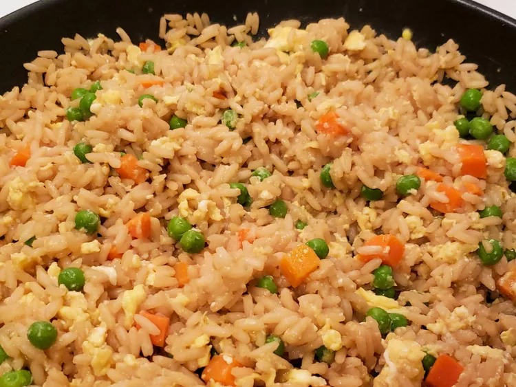

Egg Fried Rice

Ingredients
- Water (1 cup)
- Soy Sauce (2 tbsp)
- Salt (1/2 tsp)
- Day-old rice (1 cup)
- Vegetable Oil (1 tsp)
- Onion, finely chopoed (1/2 onion)
- Egg, lightly beaten (2 eggs)
- Ground black pepper (To taste)
Steps
- Bring water, soy sauce, and salt to a boil in a saucepan. Stir in day-old rice and remove from heat. Cover and let stand for 5 minutes.
- Heat oil in a wok over medium heat. Saute onions in hot oil for 2-3 minutes. Pour in beaten egg and fry for 2 minutes
- Add cooked rice to egg mixture. Season with pepper
Enjoy!
Back to Homepage